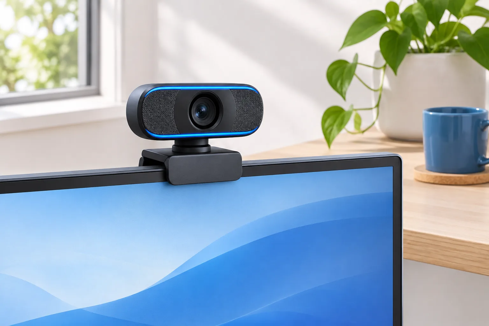

BARATA PARA AULA E CHAMADA
Melhor webcam barata
Para o PC sem câmera ou o notebook com câmera ruim: aula, entrevista e chamada com a família.

Melhor custo-benefício barataLogitech C270
CURADORIA TECHAPROVADO · 2026
Aula, reunião ou live: cada uso pede uma câmera diferente, e resolução não é tudo. Separamos 15 modelos em 3 perfis, do custo-benefício ao top de linha, e dizemos para quem cada um vale a pena.

NOSSA LEITURA
Uma webcam Full HD com boa correção de luz aparece melhor que uma 4K num quarto escuro. Antes de subir de resolução, olhe a correção de luz, o microfone e o tamanho do sensor. E lembre: Zoom, Teams e Meet costumam transmitir em 720p ou 1080p.
COMECE POR AQUI
BARATA PARA AULA E CHAMADA
Para o PC sem câmera ou o notebook com câmera ruim: aula, entrevista e chamada com a família.
HOME OFFICE E REUNIÕES
Reunião o dia todo pede imagem que corrige a luz da janela, microfone que tira o barulho e tampa de privacidade.

STREAMING E CRIAÇÃO DE CONTEÚDO
Live na Twitch, vídeo para o YouTube e aula gravada: quadros por segundo, luz e câmera que acompanha você.

A FICHA, TRADUZIDA
01 - RESOLUÇÃO
A resolução é a quantidade de pontos da imagem. 720p (HD) é o mínimo; 1080p (Full HD) é o padrão bom; 4K tem quatro vezes mais pontos que o Full HD.
Nas chamadas, os apps reduzem a imagem para economizar internet: Zoom, Teams e Meet costumam mostrar 720p ou 1080p. O 4K faz diferença em gravação e para recortar a imagem.
Para aula e reunião, 1080p basta. Para gravar vídeo para o YouTube, o 4K ajuda.
02 - QUADROS POR SEGUNDO
Fps é quantas imagens por segundo a câmera grava. Com 30 fps, o movimento é normal; com 60 fps, fica mais suave; com 100 fps, é fluido até em movimentos rápidos.
Para reunião, 30 fps resolvem. Para live de jogo e conteúdo com movimento, 60 fps ou mais fazem diferença.
Os fps altos exigem que o programa (OBS, por exemplo) e o computador estejam configurados para isso.
03 - LUZ E SENSOR
O sensor é a peça que capta a luz. Sensores maiores (como 1/2 polegada) captam mais luz e fazem imagem limpa no escuro.
A correção automática de luz (RightLight, HDR) equilibra o rosto quando há janela atrás ou luz fraca.
Nenhuma webcam faz milagre: uma luz de frente para o rosto melhora mais a imagem que trocar de câmera.
04 - MICROFONE
As webcams têm microfone para chamadas. Os modelos com dois ou três microfones e redução de ruído captam melhor a voz e menos o barulho.
Para reunião, o microfone da webcam basta. Para live e gravação, um headset ou microfone dedicado soa bem melhor.
Se você usa fone com microfone, desligue o da webcam nas configurações do app para evitar eco.
05 - PTZ E IA
PTZ significa que a câmera gira, inclina e aproxima a imagem. Com IA, ela reconhece você e acompanha seu movimento.
É útil para quem dá aula em pé, faz apresentação, cozinha ou dança na câmera.
Para quem fica sentado diante do computador, o enquadramento automático das webcams comuns basta.
A CURADORIA EM DETALHE
15 modelos da pesquisa
PERFIL · 5 MODELOS, DA ENTRADA AO TOP DE LINHA
Para quem só precisa aparecer na chamada, uma webcam simples resolve, desde que tenha microfone e ajuste de luz automático. A escada sobe de 720p para Full HD (1080p) e termina numa câmera de 60 quadros por segundo, com movimento mais fluido.

POR DENTRO DA ESCOLHA
A webcam mais barata que vale a compra: imagem HD 720p, foco automático e instalação sem driver, é só ligar no USB.
A C200 resolve o "preciso de uma câmera para amanhã": liga e funciona. Para quem vai usar todo dia, a Logitech C270 do próximo degrau tem microfone melhor e marca com mais suporte.
| Resolução | 720p |
|---|---|
| Foco | Automático |
| Conexão | USB, sem driver |
Fonte: ficha e descrição do anúncio, conferidas em 16/11/2026. Dados informados pelo fabricante.
BARATA · CUSTO-BENEFÍCIO 2 de 5
Melhor custo-benefício barata
720p · microfone com redução de ruído · correção de luz
Ver preço na AmazonPOR DENTRO DA ESCOLHA
A webcam barata de marca grande: 720p, correção automática de luz RightLight, microfone com redução de ruído e o clipe universal da Logitech, que prende em monitor e notebook.
A C270 é a escolha segura nessa faixa: imagem consistente, microfone decente e marca que funciona em qualquer computador e app. Para a maioria das chamadas, ela basta.
| Resolução | 720p |
|---|---|
| Microfone | Com redução de ruído |
| Luz | Correção automática RightLight |
| Fixação | Clipe universal |
Fonte: ficha e descrição do anúncio, conferidas em 16/11/2026. Dados informados pelo fabricante.

BARATA · ALTERNATIVA 3 de 5
Outro caminho: Full HD pelo preço da 720p
1080p · campo de visão de 85° · microfone com redução de ruído
Ver preço na AmazonPOR DENTRO DA ESCOLHA
O desvio é resolução: Full HD 1080p a 30 quadros, lente de vidro, campo de visão de 85° (cabe mais gente na imagem) e microfone com redução de ruído.
A UGREEN troca a fama da Logitech por mais resolução. Em ambiente bem iluminado, a diferença de nitidez aparece. Em quarto escuro, a C270 lida melhor com a luz.
| Resolução | 1080p a 30 fps |
|---|---|
| Campo de visão | 85° |
| Microfone | Com redução de ruído |
Fonte: ficha e descrição do anúncio, conferidas em 16/11/2026. Dados informados pelo fabricante.

BARATA · INTERMEDIÁRIO 4 de 5
1080p · ajuste automático de luz · ângulo largo
Ver preço na AmazonPOR DENTRO DA ESCOLHA
Full HD 1080p com ajuste automático de luz e ângulo largo, da HP, vendida pela própria loja. Prende em monitor e notebook e funciona ao ligar no USB.
A HP 320 junta Full HD e ajuste de luz automático com uma marca grande. É o equilíbrio entre a C270 e a UGREEN.
| Resolução | 1080p |
|---|---|
| Luz | Ajuste automático |
| Ângulo | Largo |
| Conexão | USB plug and play |
Fonte: ficha e descrição do anúncio, conferidas em 16/11/2026. Dados informados pelo fabricante.

BARATA · TOP DE LINHA 5 de 5
Top de linha barata
1080p a 60 quadros · microfone duplo · garantia Intelbras
Ver preço na AmazonPOR DENTRO DA ESCOLHA
O topo do perfil: Full HD a 60 quadros por segundo, que deixa o movimento mais fluido, microfone duplo com cancelamento de ruído e a garantia e a assistência da Intelbras, brasileira.
A WCI1080P é a webcam barata mais completa: fluidez de 60 quadros e microfone duplo. Para quem só faz chamadas, a C270 resolve por menos.
| Resolução | 1080p a 60 fps |
|---|---|
| Microfone | Duplo, com cancelamento de ruído |
| Marca | Intelbras |
Fonte: ficha e descrição do anúncio, conferidas em 16/11/2026. Dados informados pelo fabricante.
PERFIL · 5 MODELOS, DA ENTRADA AO TOP DE LINHA
No home office, a webcam passa horas ligada. O que importa é a correção automática de luz (para não ficar escuro com a janela atrás), o enquadramento automático, os microfones com redução de ruído e a tampa de privacidade. A escada sobe nesses recursos e termina numa 4K.

HOME OFFICE · ENTRADA 1 de 5
1080p · RightLight · tampa de privacidade
Ver preço na AmazonPOR DENTRO DA ESCOLHA
A Logitech Full HD de entrada: 1080p, correção de luz RightLight, que aumenta o brilho em ambientes escuros, microfone integrado e tampa de privacidade embutida.
A Brio 100 é a porta de entrada da Logitech para o home office: imagem limpa e tampa de privacidade. A Brio 300 do próximo degrau melhora a correção de luz e usa USB-C.
| Resolução | 1080p |
|---|---|
| Luz | RightLight |
| Privacidade | Tampa embutida |
| Microfone | Integrado |
Fonte: ficha e descrição do anúncio, conferidas em 16/11/2026. Dados informados pelo fabricante.
HOME OFFICE · CUSTO-BENEFÍCIO 2 de 5
Melhor custo-benefício para home office
1080p · correção automática de luz · USB-C · tampa
Ver preço na AmazonPOR DENTRO DA ESCOLHA
O salto é a imagem em luz difícil: correção automática de luz mais avançada, microfone com redução de ruído, tampa de privacidade e conexão USB-C, que liga direto em notebooks e Macs novos.
A Brio 300 é a webcam de home office que a maioria deveria comprar: aparece bem em qualquer luz e não exige configuração. Não precisa subir além deste para reuniões.
| Resolução | 1080p |
|---|---|
| Luz | Correção automática |
| Microfone | Com redução de ruído |
| Conexão | USB-C |
| Privacidade | Tampa embutida |
Fonte: ficha e descrição do anúncio, conferidas em 16/11/2026. Dados informados pelo fabricante.

HOME OFFICE · AVANÇADO 3 de 5
1080p · enquadramento automático · microfones duplos
Ver preço na AmazonPOR DENTRO DA ESCOLHA
O salto é enquadramento: o RightSight mantém você no centro quando se mexe, o modo Show Mode vira a câmera para mostrar a mesa, e os microfones duplos captam melhor a voz.
A Brio 500 resolve o "sai do enquadramento" e o "mostra no papel". Para quem só fala para a câmera, a Brio 300 basta.
| Resolução | 1080p |
|---|---|
| Enquadramento | Automático (RightSight) |
| Show Mode | Mostra a mesa |
| Microfones | Duplos |
| Privacidade | Tampa embutida |
Fonte: ficha e descrição do anúncio, conferidas em 16/11/2026. Dados informados pelo fabricante.

HOME OFFICE · ALTERNATIVA 4 de 5
Outro caminho: 4K pelo preço de uma Full HD
4K a 30 fps · sensor Sony de 1/2" · foco PDAF e ToF
Ver preço na AmazonPOR DENTRO DA ESCOLHA
O desvio é sensor: 4K a 30 fps ou 1080p a 60 fps, com sensor Sony de 1/2 polegada (grande para webcam, melhor com pouca luz) e foco automático duplo PDAF e ToF, que acerta rápido.
A S800 entrega imagem de webcam premium por preço de intermediária. Falta o ecossistema e o software da Logitech, mas na imagem ela compete com a MX Brio.
| Resolução | 4K a 30 fps · 1080p a 60 fps |
|---|---|
| Sensor | Sony 1/2" |
| Foco | PDAF + ToF |
Fonte: ficha e descrição do anúncio, conferidas em 16/11/2026. Dados informados pelo fabricante.

HOME OFFICE · TOP DE LINHA 5 de 5
Top de linha para home office
4K a 30 fps · sensor com pixels 70% maiores · microfones com redução de ruído
Ver preço na AmazonPOR DENTRO DA ESCOLHA
O topo: 4K a 30 fps ou 1080p a 60 fps com o sensor mais avançado da Logitech, de pixels 70% maiores, que dá imagem limpa com pouca luz. Tem microfones com redução de ruído, Show Mode e tampa de privacidade.
A MX Brio é a webcam mais completa da Logitech: imagem, microfones e software no topo. Vale para quem é avaliado pela imagem; para a maioria, a Brio 300 resolve.
| Resolução | 4K a 30 fps · 1080p a 60 fps |
|---|---|
| Sensor | Pixels 70% maiores (Logitech) |
| Microfones | Com redução de ruído |
| Show Mode | Sim |
| Privacidade | Tampa embutida |
Fonte: ficha e descrição do anúncio, conferidas em 16/11/2026. Dados informados pelo fabricante.
PERFIL · 5 MODELOS, DA ENTRADA AO TOP DE LINHA
Para live e vídeo, conta a fluidez (60 a 100 quadros por segundo), o tamanho do sensor, que define a imagem com pouca luz, e recursos como luz embutida e rastreamento por IA, em que a câmera gira sozinha para seguir você. A escada termina em câmeras robóticas (PTZ).

STREAMING · ENTRADA 1 de 5
1080p · microfone duplo · gira 360°
Ver preço na AmazonPOR DENTRO DA ESCOLHA
A webcam gamer de entrada: Full HD 1080p, microfone duplo, base que gira 360° e recurso para pouca luz.
A GW800 é a entrada barata para quem quer aparecer na live. Para imagem fluida, a OBSBOT Meet SE do perfil chega a 100 quadros.
| Resolução | 1080p |
|---|---|
| Microfone | Duplo |
| Base | Gira 360° |
| Conexão | USB 2.0 |
Fonte: ficha e descrição do anúncio, conferidas em 16/11/2026. Dados informados pelo fabricante.

STREAMING · ALTERNATIVA 2 de 5
Outro caminho: a luz já vem na câmera
4K · luz de anel com 4 modos · IA de imagem
Ver preço na AmazonPOR DENTRO DA ESCOLHA
O desvio é luz: webcam 4K com luz de anel embutida, quatro modos de iluminação e algoritmo de IA que ajusta a imagem junto com a luz.
A S600L resolve o problema mais comum de quem começa: falta de luz. Pelo preço, é a forma mais simples de melhorar a imagem da live.
| Resolução | 4K |
|---|---|
| Luz | Anel embutido, 4 modos |
| Imagem | Ajuste por IA |
Fonte: ficha e descrição do anúncio, conferidas em 16/11/2026. Dados informados pelo fabricante.
STREAMING · CUSTO-BENEFÍCIO 3 de 5
Melhor custo-benefício para streaming
1080p a 100 fps · sensor grande · modo retrato
Ver preço na AmazonPOR DENTRO DA ESCOLHA
O salto é fluidez: Full HD a até 100 quadros por segundo, movimento muito mais suave em jogo e live, com sensor grande para pouca luz e enquadramento pela IA da OBSBOT.
A Meet SE é a webcam de streaming que mais entrega pelo preço: imagem fluida e limpa. Para a maioria dos streamers, não precisa ir além.
| Resolução | 1080p a até 100 fps |
|---|---|
| Recursos | Enquadramento por IA |
| Uso | Streaming e gravação |
Fonte: ficha e descrição do anúncio, conferidas em 16/11/2026. Dados informados pelo fabricante.

STREAMING · AVANÇADO 4 de 5
4K · câmera PTZ com rastreamento por IA
Ver preço na AmazonPOR DENTRO DA ESCOLHA
O salto é a câmera robótica: a Tiny 2 Lite gira e inclina sozinha (PTZ) para seguir você pela sala, com rastreamento por IA e imagem 4K.
A Tiny 2 Lite muda o jogo para quem não fica parado na cadeira: a câmera acompanha. Para quem fica sentado, a Meet SE entrega mais por menos.
| Resolução | 4K |
|---|---|
| Tipo | PTZ (gira e inclina) |
| Rastreamento | Por IA |
| Uso | Aula, reunião e live |
Fonte: ficha e descrição do anúncio, conferidas em 16/11/2026. Dados informados pelo fabricante.

STREAMING · TOP DE LINHA 5 de 5
Top de linha para streaming
4K · sensor de 1/2" · 3 microfones com áudio espacial · PTZ
Ver preço na AmazonPOR DENTRO DA ESCOLHA
O topo: 48% menor e 34% mais leve que a geração anterior, com sensor de 1/2 polegada, mais potente, três microfones com áudio espacial e o rastreamento por IA da OBSBOT.
A Tiny 3 Lite é a câmera robótica mais completa da seleção: pequena, com imagem melhor em pouca luz e áudio que dispensa microfone em muitas situações.
| Resolução | 4K |
|---|---|
| Sensor | 1/2" |
| Microfones | 3, com áudio espacial |
| Tipo | PTZ com rastreamento por IA |
Fonte: ficha e descrição do anúncio, conferidas em 16/11/2026. Dados informados pelo fabricante.
Nenhum modelo encontrado. Tente outro termo ou volte para Todos.
LADO A LADO
| Modelo | Perfil | Posição | Resolução | Destaque |
|---|---|---|---|---|
| Rapoo C200 720p | Barata | Entrada | 720p | 720p · foco automático · plug and play |
| Logitech C270 | Barata | Custo-benefício | 720p | 720p · microfone com redução de ruído · correção de luz |
| UGREEN Full HD 1080p | Barata | Alternativa | 1080p a 30 fps | 1080p · campo de visão de 85° · microfone com redução de ruído |
| HP 320 Full HD | Barata | Intermediário | 1080p | 1080p · ajuste automático de luz · ângulo largo |
| Intelbras WCI1080P 60 fps | Barata | Top de linha | 1080p a 60 fps | 1080p a 60 quadros · microfone duplo · garantia Intelbras |
| Logitech Brio 100 | Home office | Entrada | 1080p | 1080p · RightLight · tampa de privacidade |
| Logitech Brio 300 | Home office | Custo-benefício | 1080p | 1080p · correção automática de luz · USB-C · tampa |
| Logitech Brio 500 | Home office | Avançado | 1080p | 1080p · enquadramento automático · microfones duplos |
| EMEET SmartCam S800 4K | Home office | Alternativa | 4K a 30 fps · 1080p a 60 fps | 4K a 30 fps · sensor Sony de 1/2" · foco PDAF e ToF |
| Logitech MX Brio 4K | Home office | Top de linha | 4K a 30 fps · 1080p a 60 fps | 4K a 30 fps · sensor com pixels 70% maiores · microfones com redução de ruído |
| Redragon GW800 Hitman | Streaming | Entrada | 1080p | 1080p · microfone duplo · gira 360° |
| EMEET S600L 4K com luz de anel | Streaming | Alternativa | 4K | 4K · luz de anel com 4 modos · IA de imagem |
| OBSBOT Meet SE | Streaming | Custo-benefício | 1080p a até 100 fps | 1080p a 100 fps · sensor grande · modo retrato |
| OBSBOT Tiny 2 Lite 4K | Streaming | Avançado | 4K | 4K · câmera PTZ com rastreamento por IA |
| OBSBOT Tiny 3 Lite | Streaming | Top de linha | 4K | 4K · sensor de 1/2" · 3 microfones com áudio espacial · PTZ |
CONSIDERAÇÕES FINAIS
Imagem confiável, microfone com redução de ruído e o clipe universal da Logitech.
Correção de luz, USB-C e tampa de privacidade: aparece bem em qualquer reunião.
Os tops de linha (Logitech MX Brio e OBSBOT Tiny 3 Lite) valem para quem grava vídeo profissionalmente ou dá aula em movimento. Para reuniões, as de custo-benefício resolvem.
Para aula e chamada, a Logitech C270. Para home office, a Logitech Brio 300. Para streaming, a OBSBOT Meet SE.
Para gravar vídeo, sim. Para reunião, pouco, porque os apps reduzem a resolução. Correção de luz e sensor fazem mais diferença.
Não: todas desta lista funcionam ao ligar no USB. Os apps das marcas só liberam ajustes extras.
Funciona. Prenda no topo da tela com o clipe; para USB-C, use a Brio 300 ou um adaptador.
Os microfones das webcams são bons para reunião. Para live, um headset ou microfone dedicado é melhor.
Porque ele muda várias vezes por dia. Usamos o preço só para montar a escada de cada perfil; o botão leva ao valor atualizado na loja.
TRANSPARÊNCIA EDITORIAL
Separamos os perfis pelo que as pessoas mais procuram: webcam barata para aula e chamada, webcam para home office e webcam para streaming. Cada modelo precisa responder com clareza "para quem ele é o certo".
Em cada perfil há modelos em faixas de preço diferentes, e cada degrau precisa entregar algo que o anterior não entrega. Dois modelos com a mesma proposta não entram juntos.
Ficha e especificações foram conferidas nos anúncios das lojas em 16/11/2026.
Os links de compra desta página são de afiliado: se você comprar por eles, o TechAprovado pode ganhar uma comissão, sem custo adicional para você. Isso não muda a ordem nem a escolha dos produtos.
📲 GUIAS E DICAS NO SEU FEED
Dicas práticas antes de comprar, em carrosséis e vídeos curtos, sempre com link para o guia completo.